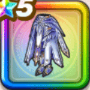

神鳥レティスの鎧下
攻略班 9.5点 / ふきとばし耐性+5%暗黒神ラプソーンへの耐性+10%眠り耐性+5%ブレス耐性+2%ふきとばし耐性+5%眠り耐性+5%スキルの斬撃ダメージ+7%【晴れ】全属性ダメージ+2%イオ属性斬撃・体技ダメージ+7%デイン属性斬撃・体技ダメージ+7%
くわしい特徴
【レベル別習得スキル】 Lv1ふきとばし耐性+5% Lv3暗黒神ラプソーンへの耐性+10% Lv5眠り耐性+5% Lv8スキルの斬撃ダメージ+7% Lv8【晴れ】全属性ダメージ+2% Lv10イオ属性斬撃・体技ダメージ+7% Lv12デイン属性斬撃・体技ダメージ+7% Lv15ブレス耐性+2% Lv18ふきとばし耐性+5% Lv20すばやさ+6 Lv23眠り耐性+5% Lv25守備力+5 【限界突破スキル】 1凸攻撃力+12 2凸すばやさ+12 3凸守備力+12 4凸さいだいHP+12